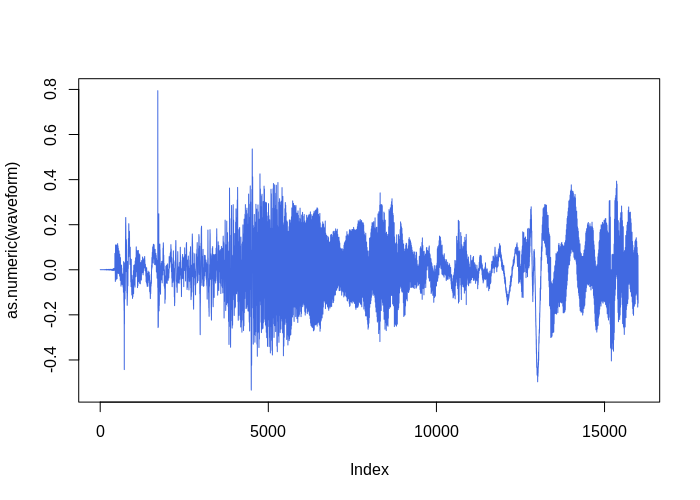
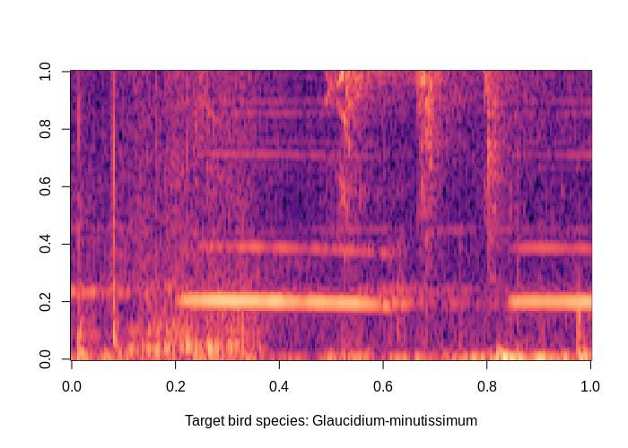

09-modeling-raw-audio-1dconv.RmdThe function birdcallbr_dataset() is a [torch::dataset()] ready to be used for modeling with {torch} framework. To know more about torch datasets, see this and this.
One of the options offered by birdcallbr_dataset() is the audio duration. If argument audio_duration = 1 then audio samples will be 1 second long. These takes are slices from a given original wav file with potential several seconds long. The current options allowed are 1, 2 and 5 seconds. This will example will work on the 1 second long wave slices.
bcbr2_train <- birdcallbr_dataset("../data-raw", audio_duration = 1, download = FALSE, train = TRUE)
bcbr2_test <- birdcallbr_dataset("../data-raw", audio_duration = 1, download = FALSE, train = FALSE)
length(bcbr2_train)
#> [1] 17315
length(bcbr2_test)
#> [1] 3316All the files were downsampled to 16kHz, so each one of those 17315 + 3316 1sec samples will have 16000 samples.
Each instance is a named list with the waveform, slice_id, filepath, sample_rate, label, label_one_hot, label_index entrances
First instance from training set:
bcbr2_train[1]
#> $waveform
#> torch_tensor
#> Columns 1 to 10 0.0003 0.0003 0.0003 0.0003 0.0003 0.0003 0.0003 0.0003 0.0003 0.0003
#>
#> Columns 11 to 20 0.0003 0.0003 0.0003 0.0003 0.0003 0.0003 0.0003 0.0003 0.0003 0.0003
#>
#> Columns 21 to 30 0.0003 0.0003 0.0003 0.0003 0.0003 0.0003 0.0003 0.0003 0.0003 0.0003
#>
#> Columns 31 to 40 0.0003 0.0003 0.0003 0.0003 0.0003 0.0003 0.0003 0.0003 0.0003 0.0003
#>
#> Columns 41 to 50 0.0003 0.0003 0.0003 0.0003 0.0003 0.0003 0.0003 0.0003 0.0003 0.0003
#>
#> Columns 51 to 60 0.0003 0.0003 0.0003 0.0003 0.0003 0.0003 0.0003 0.0003 0.0003 0.0003
#>
#> Columns 61 to 70 0.0003 0.0003 0.0003 0.0003 0.0003 0.0003 0.0003 0.0003 0.0003 0.0003
#>
#> Columns 71 to 80 0.0003 0.0003 0.0003 0.0003 0.0003 0.0003 0.0003 0.0003 0.0003 0.0003
#>
#> Columns 81 to 90 0.0003 0.0003 0.0003 0.0003 0.0003 0.0003 0.0003 0.0003 0.0003 0.0003
#>
#> Columns 91 to 100 0.0003 0.0003 0.0003 0.0003 0.0003 0.0003 0.0003 0.0003 0.0004 0.0004
#>
#> Columns 101 to 110 0.0004 0.0002 0.0004 0.0003 0.0003 0.0002 0.0004 0.0004 0.0002 0.0004
#>
#> Columns 111 to 120 0.0002 0.0002 0.0003 0.0002 0.0004 0.0008 0.0003 0.0002 0.0002 0.0005
#>
#> Columns 121 to 130-0.0000 0.0001 0.0002 -0.0000 0.0002 0.0003 0.0002 -0.0000 0.0004 0.0004
#>
#> Columns 131 to 140 0.0005 -0.0000 0.0004 -0.0001 0.0003 0.0008 0.0005 0.0006 0.0008 0.0001
#>
#> Columns 141 to 150 0.0004 0.0004 -0.0000 0.0001 -0.0000 0.0005 0.0001 0.0001 0.0002 0.0002
#>
#> ... [the output was truncated (use n=-1 to disable)]
#> [ CPUFloatType{1,16000} ]
#>
#> $slice_id
#> [1] "Glaucidium-minutissimum-1066225@0@1@.wav"
#>
#> $filepath
#> [1] "../data-raw/BirdcallBR/birdcallbr_v1_1000ms/wavs_1000ms/Glaucidium-minutissimum-1066225@0@1@.wav"
#>
#> $sample_rate
#> [1] 16000
#>
#> $label
#> [1] "Glaucidium-minutissimum"
#>
#> $label_one_hot
#> torch_tensor
#> 1
#> 0
#> 0
#> [ CPUFloatType{3} ]
#>
#> $label_index
#> [1] 1The waveform and the mel spectrogram:
# waveform plot
waveform <- bcbr2_train[1]$waveform$squeeze(1)
plot(as.numeric(waveform), type = "l", col = "royalblue")
# mel spec plot
melspec <- torchaudio::transform_mel_spectrogram(1024, 1024, 128, n_mels = 128, power = 1)
mestrado::plot_pixel_matrix(
torch_log10(melspec(waveform)),
title = paste0("Target bird species: ", bcbr2_train[1]$label)
)
A conveninent code conditioning the device according with the current machine running this code. If cuda is available, then it will be set to be the main device.
device <- torch_device(if (cuda_is_available()) "cuda" else "cpu")
if(device$type == "cuda") {
num_workers <- 1
pin_memory <- TRUE
} else {
num_workers <- 0
pin_memory <- FALSE
}As (probably) the dataset is too big to fit in memory, do things in batches is needed. The collate_fn(batch) function has the task to stack up a list of samples into a big tensor. It will be feeded to a dataloader, which will know how and when fetch a new batch of fresh data.
# Make all tensor in a batch the same length by padding with zeros
pad_sequence <- function(batch) {
batch <- sapply(batch, function(x) (x$t()))
batch <- torch::nn_utils_rnn_pad_sequence(batch, batch_first = TRUE, padding_value = 0.)
return(batch$permute(c(1, 3, 2)))
}
# Group the list of tensors into a batched tensor
collate_fn <- function(batch) {
# A batch list has the form:
# list of lists: (waveform, slice_id, filepath, sample_rate, label, label_one_hot)
# Transpose it
batch <- purrr::transpose(batch)
tensors <- batch$waveform
targets <- batch$label_index
tensors <- pad_sequence(tensors)$to(device = device)
targets <- torch::torch_tensor(unlist(targets))$to(device = device)
return(list(tensors = tensors, targets = targets))
}
batch_size <- 64
## dataloader for train set
bcbr2_train_dl <- dataloader(
dataset = bcbr2_train, batch_size = batch_size,
shuffle = TRUE, collate_fn = collate_fn,
num_workers = num_workers, pin_memory = pin_memory
)
## dataloader for test set
bcbr2_test_dl <- dataloader(
dataset = bcbr2_test, batch_size = batch_size,
shuffle = FALSE, collate_fn = collate_fn,
num_workers = num_workers, pin_memory = pin_memory
)This model is inspired by archtecture presented in (Abdoli, 2019). Here is called as Raw1DNet.
Raw1DNet <- nn_module(
"Raw1DNet",
initialize = function() {
self$conv1 <- nn_conv1d( 1, 16, kernel_size = 64, stride = 2) # (1, 16000) --> (16, 7969)
self$bn1 <- nn_batch_norm1d(16)
self$pool1 <- nn_avg_pool1d(8) # (16, 996)
self$conv2 <- nn_conv1d(16, 32, kernel_size = 32, stride = 2) # (16, 1996) --> (32, 483)
self$bn2 <- nn_batch_norm1d(32)
self$pool2 <- nn_avg_pool1d(8) # (32, 60)
self$conv3 <- nn_conv1d(32, 64, kernel_size = 16, stride = 2) # (32, 123) --> (64, 23)
self$bn3 <- nn_batch_norm1d(64)
self$pool3 <- nn_avg_pool1d(2) # (64, 11)
self$conv4 <- nn_conv1d(64, 128, kernel_size = 2, stride = 1) # (64, 11) --> (128, 10)
self$bn4 <- nn_batch_norm1d(128)
self$pool4 <- nn_avg_pool1d(10)
self$lin1 <- nn_linear(128, 64)
self$bn5 <- nn_batch_norm1d(64)
self$lin2 <- nn_linear(64, 10)
self$bn6 <- nn_batch_norm1d(10)
self$lin3 <- nn_linear(10, 3)
self$softmax <- nn_log_softmax(2)
},
forward = function(x) {
out <- x %>%
self$conv1() %>%
nnf_relu() %>%
self$bn1() %>%
self$pool1() %>%
self$conv2() %>%
nnf_relu() %>%
self$bn2() %>%
self$pool2() %>%
self$conv3() %>%
nnf_relu() %>%
self$bn3() %>%
self$pool3() %>%
self$conv4() %>%
nnf_relu() %>%
self$bn4()
out <- self$pool4(out)$squeeze(3) %>%
self$lin1() %>%
self$bn5() %>%
nnf_relu() %>%
self$lin2() %>%
self$bn6() %>%
nnf_relu() %>%
self$lin3() %>%
self$softmax()
return(out)
}
)Instantiating…
model <- Raw1DNet()
model$to(device = device)
# model(bcbr2_train_dl$.iter()$.next()$tensors)
str(model$parameters)
#> List of 26
#> $ conv1.weight:Float [1:16, 1:1, 1:64]
#> $ conv1.bias :Float [1:16]
#> $ bn1.weight :Float [1:16]
#> $ bn1.bias :Float [1:16]
#> $ conv2.weight:Float [1:32, 1:16, 1:32]
#> $ conv2.bias :Float [1:32]
#> $ bn2.weight :Float [1:32]
#> $ bn2.bias :Float [1:32]
#> $ conv3.weight:Float [1:64, 1:32, 1:16]
#> $ conv3.bias :Float [1:64]
#> $ bn3.weight :Float [1:64]
#> $ bn3.bias :Float [1:64]
#> $ conv4.weight:Float [1:128, 1:64, 1:2]
#> $ conv4.bias :Float [1:128]
#> $ bn4.weight :Float [1:128]
#> $ bn4.bias :Float [1:128]
#> $ lin1.weight :Float [1:64, 1:128]
#> $ lin1.bias :Float [1:64]
#> $ bn5.weight :Float [1:64]
#> $ bn5.bias :Float [1:64]
#> $ lin2.weight :Float [1:10, 1:64]
#> $ lin2.bias :Float [1:10]
#> $ bn6.weight :Float [1:10]
#> $ bn6.bias :Float [1:10]
#> $ lin3.weight :Float [1:3, 1:10]
#> $ lin3.bias :Float [1:3]
count_parameters <- function(model) {
requires <- purrr::map_lgl(model$parameters, ~.$requires_grad)
params <- purrr::map_int(model$parameters[requires], ~.$numel())
sum(params)
}
count_parameters(model)
#> [1] 76367
criterion <- nn_nll_loss()
optimizer <- torch::optim_sgd(model$parameters, lr = 0.005, weight_decay = 0.00001)
scheduler <- torch::lr_step(optimizer, step_size = 10, gamma = 0.1) Train loop:
train <- function(model, epoch, log_interval) {
model$train()
batches <- enumerate(bcbr2_train_dl)
for(batch_idx in seq_along(batches)) {
batch <- batches[batch_idx][[1]]
data <- batch[[1]]$to(device = device)
target <- batch[[2]]$to(device = device)
output <- model(data)
loss <- criterion(output, target)$to(device = device)
optimizer$zero_grad()
loss$backward()
optimizer$step()
# update progress bar
pbar$tick(tokens = list(loss = loss$item()))
# record loss
losses <<- c(losses, loss$item())
if(batch_idx %% log_interval == 0) {
if(batch_idx != log_interval) dev.off()
plot(log10(losses), type = "l", col = "royalblue")
}
}
}Test loop:
# count number of correct predictions
number_of_correct <- function(pred, target) {
return(pred$squeeze()$eq(target)$sum()$item())
}
# find most likely label index for each element in the batch
get_likely_index <- function(tensor) {
return(tensor$argmax(dim=-1L) + 1L)
}
test <- function(model, epoch) {
model$eval()
correct <- 0
batches <- enumerate(bcbr2_test_dl)
obs_vs_pred <- data.frame(obs = integer(0), pred = numeric(0))
for(batch_idx in seq_along(batches)) {
batch <- batches[batch_idx][[1]]
data <- batch[[1]]$to(device = device)
target <- batch[[2]]$to(device = device)
output <- model(data)
pred <- get_likely_index(output)
correct <- correct + number_of_correct(pred, target)
obs_vs_pred <- rbind(
obs_vs_pred,
data.frame(
obs = as.integer(target$to(device = torch_device("cpu"))),
pred = as.numeric(pred$to(device = torch_device("cpu")))
)
)
# update progress bar
pbar$tick()
}
print(glue::glue("Test Epoch: {epoch} Accuracy: {correct}/{length(bcbr2_test_dl$dataset)} ({scales::percent(correct / length(bcbr2_test_dl$dataset))})"))
print(obs_vs_pred %>% dplyr::mutate_all(as.factor) %>% yardstick::conf_mat(obs, pred))
}
log_interval <- 40
n_epoch <- 50
losses <- c()
for(epoch in seq.int(n_epoch)) {
cat(paste0("Epoch ", epoch, "/", n_epoch, "\n"))
pbar <- progress::progress_bar$new(total = (length(bcbr2_train_dl) + length(bcbr2_test_dl)), clear = FALSE, width = 90,
incomplete = ".", format = "[:bar] [:current/:total :percent] - ETA: :eta - loss: :loss")
train(model, epoch, log_interval)
test(model, epoch)
plot(losses, type = "l", col = "royalblue")
scheduler$step()
}
#> [================================================] [323/323 100%] - ETA: 0s - loss: :loss
#> Test Epoch: 2 Accuracy: 2713/3316 (82%)
#> Truth
#> Prediction 1 2 3
#> 1 168 24 2
#> 2 136 2338 403
#> 3 2 36 207
#> Epoch 3/50
#> [==========>.........................] [102/323 32%] - ETA: 1m - loss: 0.534031510353088
#>
#> (truncated...)
#>
#> Test Epoch: 50/50
#> Accuracy: 2934/3316 (88%)
#> Truth
#> Prediction 1 2 3
#> 1 246 39 3
#> 2 60 2286 207
#> 3 0 73 402| Prediction | Galu | Unknown | Sp |
|---|---|---|---|
| Galu | 246 | 39 | 3 |
| Unknown | 60 | 2286 | 207 |
| Sp | 0 | 73 | 402 |
# stores ------------------------------------------------------
# torch::torch_save(model, "inst/modelos/raw_1dconv_1seg.pt")
# restore -----------------------------------------------------
# model <- torch::torch_load("inst/modelos/raw_1dconv_1seg.pt")
# model$parameters %>% purrr::walk(function(param) param$requires_grad_(TRUE))